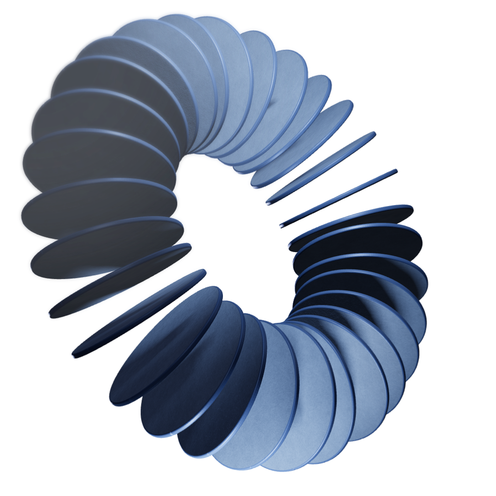

Product
Van versnipperde GRC naar één bron van waarheid
Eén Europees platform voor risk, compliance en audit. Niet aangepast vanuit een Amerikaans pakket, maar gebouwd voor de regels waar jij mee werkt.
Met een team dat risk en compliance in de financiële sector van binnenuit kent.

Tot de video klaar is: stilstaand beeld met playknop
Vertrouwd door 100+ financiële instellingen in Europa
Gebouwd voor jouw sector
Elke sector heeft zijn eigen toezichthouder, regels en tempo. Kies de jouwe en zie wat CERRIX daar voor je doet.
Eén platform voor risk, compliance en audit
Risico's, controls, bewijs en eigenaarschap op één plek. Voor alle drie de lijnen.
Regulatory monitoring (Ruler)
Regelgeving met de hand bijhouden over meerdere bronnen kost tijd en leidt tot fouten. Ruler en CERRIX geven je één traceerbare keten van wijziging tot control.
- Doorlopende monitoring van Europese toezichthouders
- De regulatory bridge legt elke wijziging naast je risico's en controls
- AI stelt een gap-analyse op die je team beoordeelt en goedkeurt
Risico- en controlebeheer
Breng risico's en controls samen in één register. Zo zie je altijd waar je staat, zonder losse spreadsheets bij te houden.
- Eén risicoregister voor alle drie de lijnen
- Controls direct gekoppeld aan risico's en bewijs
- Actuele risicoscores, klaar voor het bestuur
Compliancemanagement
Wet- en regelgeving vertaald naar normen en controls in één omgeving. Zo laat je op elk moment zien dat je voldoet, met het bewijs erbij.
- Normenkaders als DORA, NIS2 en ISO 27001 vooraf ingericht
- Bewijs hangt direct aan de control waar het bij hoort
- Altijd een actueel beeld van je compliancestatus
Auditmanagement
Plan audits, leg bevindingen vast en volg verbeteracties op tot ze zijn afgerond. De tweede en derde lijn werken in dezelfde data.
- Auditplanning en werkprogramma's op één plek
- Bevindingen gekoppeld aan risico's en controls
- Verbeteracties met eigenaar, deadline en status
Incidentmanagement
Meld, classificeer en handel incidenten af volgens vaste stappen. Ernstige incidenten meld je op tijd aan de toezichthouder.
- Meldformulier voor de hele organisatie
- Classificatie en termijnen volgens DORA
- Oorzaken en acties gekoppeld aan je risico's
Procesmanagement
Breng je processen in kaart en koppel ze aan risico's en controls. Zo zie je per proces waar je kwetsbaar bent en wie verantwoordelijk is.
- Processen, eigenaren en stappen op één plek
- Risico's en controls per processtap zichtbaar
- Wijzigingen in processen direct doorgevoerd in je controls
Third party management
Houd grip op leveranciers en uitbesteding, van selectie tot exit. Het register van informatie vul je bij terwijl je werkt.
- Leveranciers beoordelen met vaste vragenlijsten
- Register van informatie klaar voor DORA
- Contracten, risico's en exitplannen per leverancier
Privacy en GDPR
Leg verwerkingen vast, beoordeel risico's met een DPIA en handel datalekken af binnen de wettelijke termijn.
- Verwerkingsregister dat actueel blijft
- DPIA's met vaste stappen en goedkeuring
- Datalekken gemeld en gedocumenteerd binnen 72 uur
Rapportage en dashboards
Realtime inzicht in risico's, controls en acties, van werkvloer tot bestuur. Rapportages maak je in minuten in plaats van dagen.
- Dashboards per rol: bestuur, risk, compliance en audit
- Kwartaalrapportage met één klik
- Altijd gebaseerd op de actuele data in CERRIX
AI en automatisering
AI helpt bij het werk dat nu het meeste tijd kost: zoeken, samenvatten en terugkerende taken. Jij houdt de regie en keurt goed.
- Stel je risicodata een vraag in gewone taal
- Samenvattingen voor bestuur en toezichthouder
- Terugkerende controles en herinneringen automatisch
Nieuw · AI in CERRIX
Stel je risicodata gewoon een vraag
Geen rapport bouwen, geen export naar Excel. Je vraagt het, CERRIX zoekt het antwoord in je eigen data.
Vandaag, vaak nog
- Export uit drie systemen
- Samenvoegen in Excel
- Draaitabel en controle
- Twee tot drie dagen later een antwoord
Met CERRIX AI
Vier controls, waarvan drie bij IT. Twee daarvan horen bij DORA.
Antwoord in seconden
AI with human in the loop
Elke tab is een AI-functie met zijn eigen voor en na. Links neutraal, rechts beweegt.
Zo werken klanten met CERRIX
“We zien nu in één oogopslag waar onze risico's zitten, en bewijzen dat zonder extra werk.”
Beveiliging op Enterprise-niveau
Databescherming
ISO/IEC 27001-gecertificeerd, volgens de internationale standaard voor informatiebeveiliging.
Aantoonbare beheersing
ISAE 3402 Type II: onze interne beheersing wordt onafhankelijk getoetst.
Klaar voor de financiële sector
FSQS-NL-geregistreerd en daarmee vooraf gekwalificeerd voor inkoop door banken en verzekeraars in Nederland.
Met Jeroen Tacke en Ruben Andeweg. Live, met ruimte voor jouw vragen.
Lessen uit het webinar met Jeroen Tacke en Ruben Andeweg: drie signalen die je al uit je eigen data kunt lezen.
Twee platformen naast elkaar, en welke past bij de DORA-, NIS2- en ISQM-verplichtingen van Europese teams.